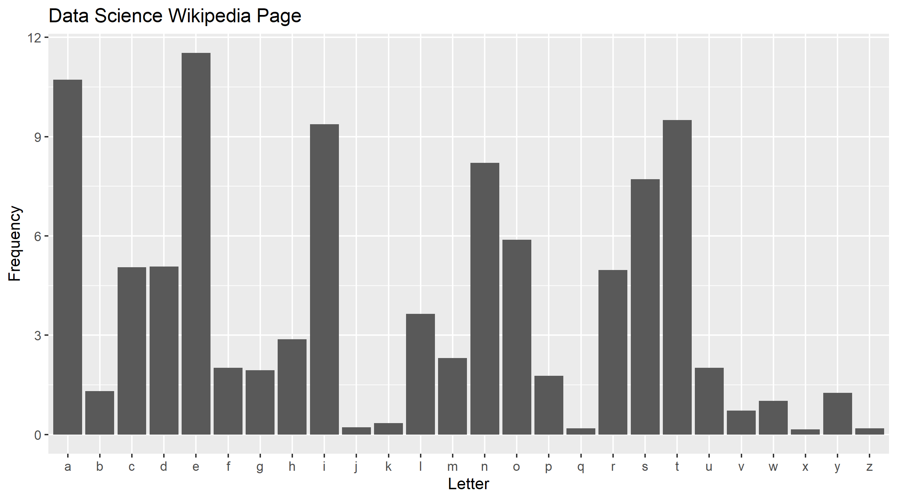
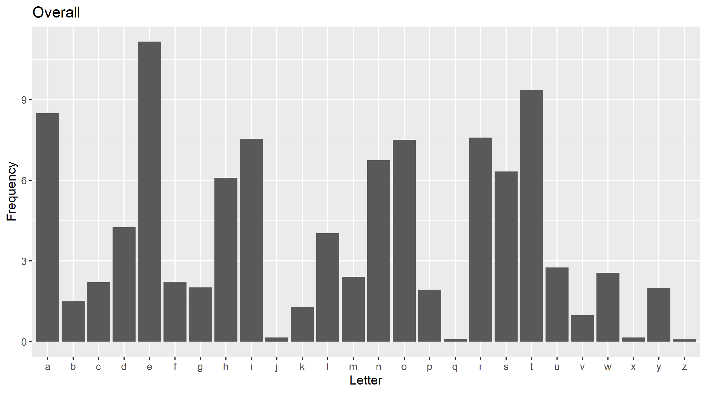

#----------
# Libraries
#----------
# Set up
library(here)
library(ggplot2)
# Library for getting html
library(rvest)
help(html_text)NOTE: This post is about the old blog design. The images are not used on this site.
This blog post and the next one cover the code for making the site images. The first post pulls the data, and the second one creates the images. The setup first pulls the contents from the Data Science page of Wikipedia to get the letter frequencies. The code then pulls the overall letter frequencies for the English language. Finally, it saves them together to graph later.
This first section just lists out the R libraries. The here and ggplot2 libraries are standard for most of my projects. The main additional library is rvest, which pulls the content from web pages.
The second section pulls the Data Science Wikipedia page, cleans up the result a little, and graphs the data to check it.
#--------------------
# 'Data Science' data
#--------------------
# Scrape the Data Science data
data_science <- read_html("https://en.wikipedia.org/wiki/Data_science")
# Pull out main title
heading1 <- html_text(html_nodes(data_science, "h1"))
heading1
# Pull out body text
body <- html_text(html_nodes(data_science, "p"))
head(body)
# Add main title
body[1] <- paste(heading1, body[1])
body[1]
# Crush together
body <- paste(body, collapse = " ")
# barplot of counts
ds_letter <- data.frame(table(
strsplit(tolower(gsub("[^[:alpha:]]", "", body)), "")))
names(ds_letter) <- c("Letter", "Frequency")
ds_letter$Frequency <- ds_letter$Frequency / sum(ds_letter$Frequency) * 100
ds_letter
ggplot(data = ds_letter, aes(Letter, Frequency)) +
geom_bar(stat = "identity") +
ggtitle("Data Science Wikipedia Page")
ggsave(filename = here::here("images", "ds_letter.png"))
The next section is like the previous one. Instead of pulling the text from a Wikipedia page, the code pulls data out of a table for letter frequencies.
#---------------
# Overall data
#---------------
# Get overall letter counts page
letter_frequency <-
xml2::read_html("https://en.wikipedia.org/wiki/Letter_frequency")
# Find the right table
# Thanks Robert Lewand and Pavel Micka
tables <- html_nodes(letter_frequency, "table")
overall_letter <- html_table(tables[1], fill = TRUE)[[1]]
overall_letter <- overall_letter[c(1, 3)]
names(overall_letter) <- c("Letter", "Frequency")
overall_letter
ggplot(data = overall_letter, aes(Letter, Frequency)) +
geom_bar(stat = "identity") +
ggtitle("Overall")
ggsave(filename = here::here("images", "overall_letter.png"))
The last two sections combine the data and save it for future use.
#-------------
# Combine data
#-------------
overall_letter$Source <- "Overall"
ds_letter$Source <- "Data Science"
freqs <- rbind(overall_letter, ds_letter)
freqs| Letter | Frequency | Source |
|---|---|---|
| a | 8.50 | Overall |
| b | 1.49 | Overall |
| c | 2.20 | Overall |
| d | 4.25 | Overall |
| e | 11.16 | Overall |
| f | 2.23 | Overall |
| g | 2.02 | Overall |
| h | 6.09 | Overall |
| i | 7.55 | Overall |
| j | 0.15 | Overall |
| k | 1.29 | Overall |
| l | 4.03 | Overall |
| m | 2.41 | Overall |
| n | 6.75 | Overall |
| o | 7.51 | Overall |
| p | 1.93 | Overall |
| q | 0.10 | Overall |
| r | 7.59 | Overall |
| s | 6.33 | Overall |
| t | 9.36 | Overall |
| u | 2.76 | Overall |
| v | 0.98 | Overall |
| w | 2.56 | Overall |
| x | 0.15 | Overall |
| y | 1.99 | Overall |
| z | 0.08 | Overall |
| a | 10.72 | Data Science |
| b | 1.31 | Data Science |
| c | 5.06 | Data Science |
| d | 5.08 | Data Science |
| e | 11.53 | Data Science |
| f | 2.01 | Data Science |
| g | 1.94 | Data Science |
| h | 2.87 | Data Science |
| i | 9.38 | Data Science |
| j | 0.22 | Data Science |
| k | 0.34 | Data Science |
| l | 3.65 | Data Science |
| m | 2.31 | Data Science |
| n | 8.21 | Data Science |
| o | 5.88 | Data Science |
| p | 1.77 | Data Science |
| q | 0.19 | Data Science |
| r | 4.97 | Data Science |
| s | 7.71 | Data Science |
| t | 9.50 | Data Science |
| u | 2.01 | Data Science |
| v | 0.72 | Data Science |
| w | 1.02 | Data Science |
| x | 0.15 | Data Science |
| y | 1.26 | Data Science |
| z | 0.19 | Data Science |
# Save the file in case it's needed later after Wikipedia updates
write.csv(freqs,
file = here::here("freqs.csv"),
row.names = FALSE)The source code file is found here. This data will be read back into R to create the images in the next post.